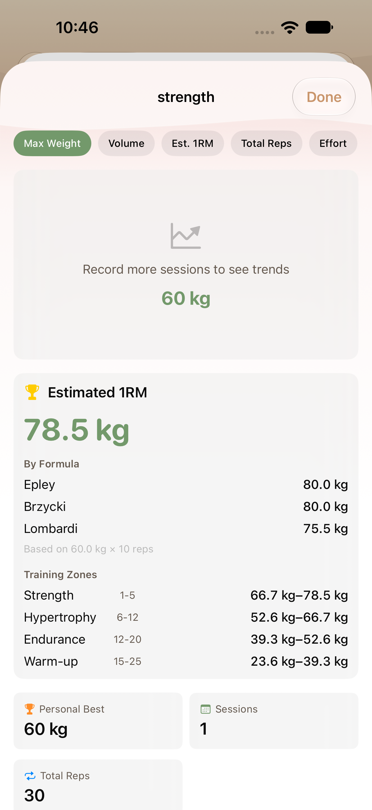
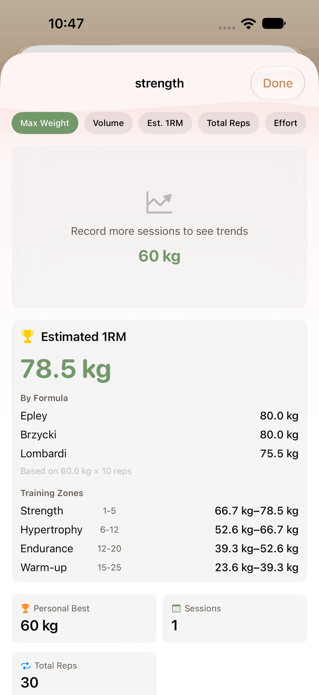
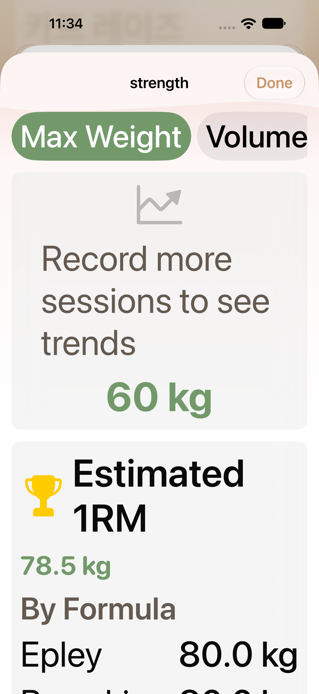
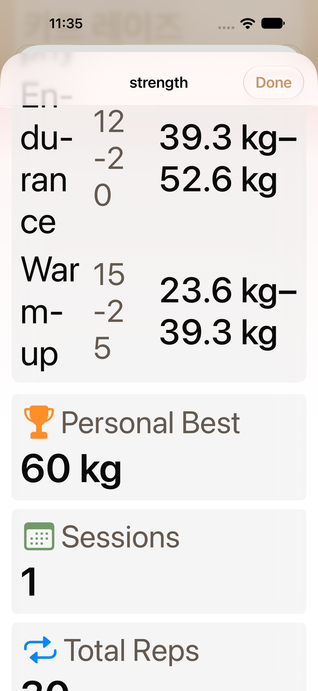
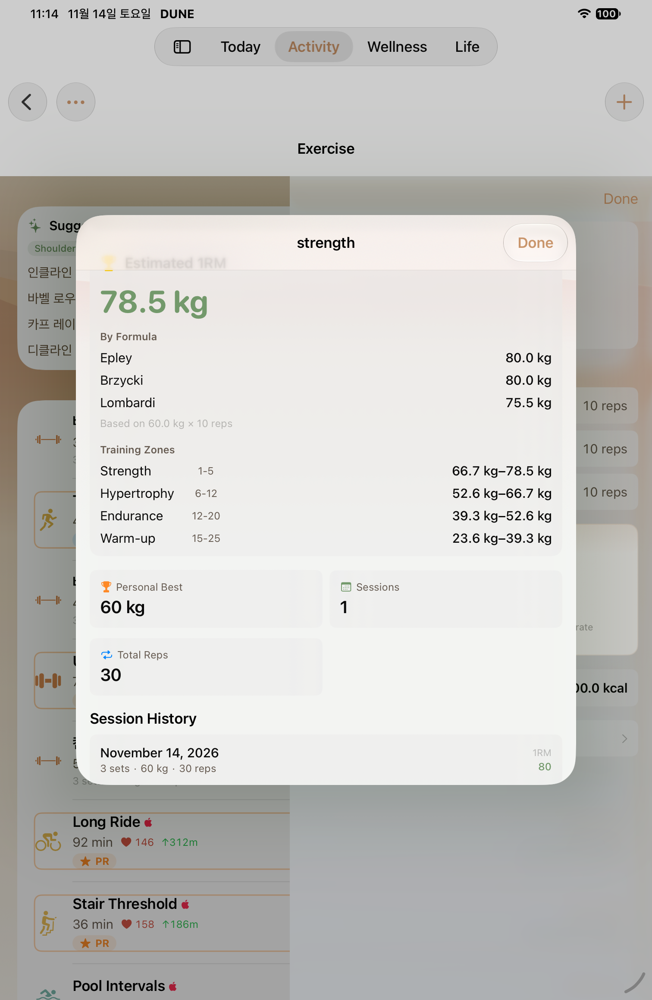
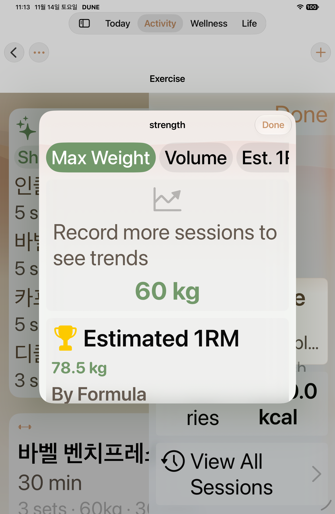
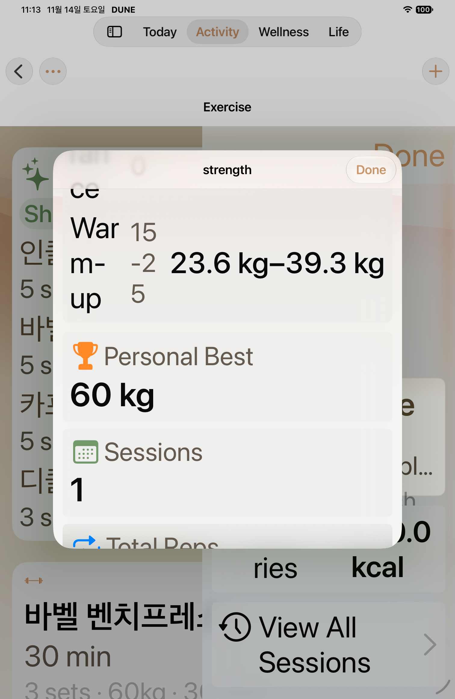

Native UI captures, 2026-11-14. The phone normal capture uses source c95e246c; the phone MAX and iPad captures use 93cabfc15. Earlier Nov 7 diagnostics remain in their historical review tree.






